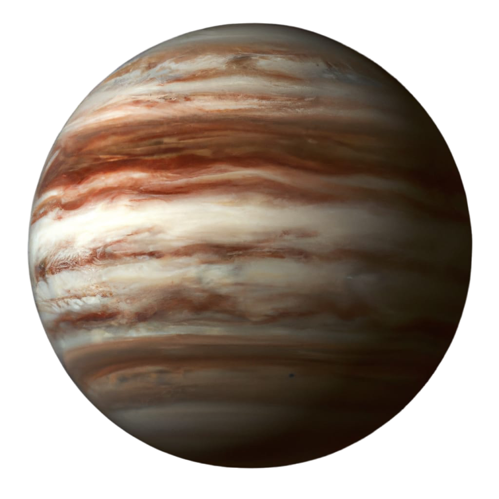

Solar System |
Our solar system has eight planets orbiting the Sun. The four inner planets — Mercury, Venus, Earth, and Mars — are rocky and smaller. Earth is the only known planet with life. The outer planets — Jupiter, Saturn, Uranus, and Neptune — are gas giants, with Jupiter being the largest. Saturn is famous for its beautiful rings, while Uranus and Neptune are icy giants with strong winds. Each planet is unique in size, atmosphere, and composition, making the solar system a diverse and fascinating place to explore and study.
MercuryMercury is the smallest planet in our solar system and the one closest to the Sun. It has a rocky surface covered with craters, similar to the Moon. Despite being so close to the Sun, Mercury is not the hottest planet because it has no atmosphere to trap heat. Temperatures on Mercury can range from extremely hot during the day to freezing cold at night. A year on Mercury lasts only 88 days on Earth.The distance between the Sun and Mercury is 59.294 million km. Since it is difficult to observe due to its distance to the Sun, Mercury remains one of the most mysterious planets. |

|
VenusVenus is the second planet from the Sun and is often called Earth’s “sister planet” because of its similar size. However, it has a thick atmosphere made mostly of carbon dioxide, which traps heat and makes Venus the hottest planet in our solar system. Its surface temperature can reach up to 475°C! Venus has clouds of sulfuric acid and shows no signs of life. It rotates very slowly and in the opposite direction of most planets. Despite its beauty and brightness in the sky, Venus is a harsh world. |
|
EarthEarth is the third planet from the Sun and the only known planet to support life. It has land, water, and air, which make it perfect for humans, animals, and plants to live. Around 70% of Earth's surface is covered with water, and the rest is land, including mountains, forests, and deserts. Earth rotates on its axis, causing day and night, and revolves around the Sun to create seasons. It is our home and needs to be protected from pollution and climate change so that future generations can also enjoy its beauty and resources. |

|
MarsMars, often called the "Red Planet," is the fourth planet from the Sun in our solar system. It gets its reddish color from iron oxide (rust) on its surface. Mars is known for its rocky terrain, giant volcanoes like Olympus Mons,(which is bigger than the hawaiian islands) and deep canyons such as Valles Marineris. Scientists believe Mars once had water, which raises the possibility that it may have supported life in the past. Today, many space missions explore Mars to learn more about its climate, surface, and potential for future human colonization. It remains a key focus in space exploration. |
|
JupiterJupiter is the largest planet in our solar system and is known for its swirling clouds and powerful storms, including the famous Great Red Spot. It is a gas giant made mostly of hydrogen and helium, with no solid surface. Jupiter has at least 95 moons, including Ganymede, the largest moon in the solar system. It has strong gravity and a very fast rotation, completing one day in just under 10 hours. Jupiter’s thick atmosphere and magnetic field make it one of the most fascinating and powerful planets to study in space science. |
 |
SaturnSaturn is the sixth planet from the Sun and is best known for its stunning rings made of ice, rock, and dust. It is a gas giant, much larger than Earth, and is mostly made of hydrogen and helium. Saturn has over 150 moons and moonlets, with Titan being the largest and second-biggest moon in the solar system. The planet has a very fast rotation .Despite its size and beauty, Saturn cannot support life as we know it. It remains a fascinating subject for astronomers and space explorers. |

|
UranusUranus is the seventh planet from the Sun and is known for its unique sideways rotation. Unlike other planets, it rotates almost completely on its side, possibly due to a massive collision long ago. It is an ice planet, made mostly of water, methane, and ammonia ices, giving it a pale blue color. Uranus has a faint ring,and 27 known moons. It’s extremely cold, with temperatures dropping as low as -224°C, making it one of the coldest planets in our solar system. |

|
NeptuneNeptune is the eighth and farthest planet from the Sun in our solar system. It is a gas planet, known for its deep blue color caused by methane in its atmosphere. Neptune is about four times wider than Earth and has very strong winds, some of the fastest in the solar system. It was discovered in 1846 and is named after the Roman god of the sea. Neptune has 14 known moons, with Triton being the largest. Because it is so far away, it takes about 165 Earth years to complete one orbit around the Sun. making it one of the coldest planets in our solar system. |

|
Designed and developed by Ishika Ahuja 6G